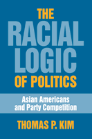

Why the two-party political system works against Asian Americans
Why the two-party political system works against Asian Americans


 Why the two-party political system works against Asian Americans
Why the two-party political system works against Asian Americans

|  |
The Racial Logic of PoliticsAsian Americans and Party CompetitionThomas P. Kimpaper EAN: 978-1-59213-549-3 (ISBN: 1-59213-549-8) |
"This is a very important, smart, and well-written book that will have a significant impact on Asian American politics and, more broadly, racial politics in America. In my mind, it is simply the best book on Asian American electoral and legislative politics, and it is a significant addition to the broader race literature. It will make Thomas Kim a leading figure in both Asian American and race politics."
—Paul Frymer, University of California, Santa Cruz, and author of Uneasy Alliances: Race and Party Competition in America
As he systemically studies the barriers that Asian Americans face in the electoral and legislative processes, Thomas Kim shows how racism is embedded in America's two-party political system.
Here Kim examines the institutional barriers that Asian Americans face in the electoral and legislative processes. Utilizing approaches from ethnic studies and political science, including rational choice theory, he demonstrates how the political logic of two-party competition actually works against Asian American political interests. According to Kim, political party leaders recognize that Asian Americans are tagged with "ethnic markers" that label them as immutably "foreign," and as such, parties cannot afford to be too closely associated with (racialized) Asian Americans. In publicly repudiating Asian American efforts to gain political power, Kim asserts, party elites are making rational, strategic calculations.
Although other commentators have blamed the diversity of the Asian American population for its lack of political success, Kim argues convincingly that race itself is the chief barrier to political participation—and it will not be overcome simply by electing or appointing more Asian Americans to political office.
"This is a worthy effort to apply the new institutionalism to cultural studies....[Kim’s] analysis of the interaction of institutional dynamics and racial formation is a significant contribution which deserves attention from anyone interested in the intersection of race and politics."
—Choice
"[A] well-written and highly entertaining analysis of how the cultural construction of race mediates the political fortunes of Asian Americans."
—The Journal of American Ethnic History
"The book has several notable strengths. Most importantly, Kim’s argument about how parties are incentivized to respond to the racialization of Asian Americans is reasonable and compelling…It offers a bracing and much-needed challenge to the conventional understanding that a racial or ethnic group’s growing numbers and money are likely to translate into meaningful political power."
—Political Science Quarterly
"This is a welcome effort to extend the study of race to American political institutions. A major contribution is the exploration of the way that Asian American political prospects vary across institutions….The Racial Logic of Politics deserves attention."
—Perspectives on Politics
Also available in e-book
1. Introduction
2. Ideological Consensus and the American Two-Party System
3. The National Parties, Asian Americans and the Campaign Finance Controversy
4. Asian American Congressional Representation
5. Silence, Mobilization, and the Future of Asian American Politics
References
Thomas P. Kim is Associate Professor of Politics & International Relations at Scripps College, and Core Faculty in the Intercollegiate Department of Asian American Studies at the Claremont Colleges.
Political Science and Public Policy
Asian American Studies
Race and Ethnicity
Asian American History and Culture, edited by K. Scott Wong, Linda Trinh Võ, and Cathy Schlund-Vials.
Founded by Sucheng Chan in 1991, the Asian American History and Culture, series has sponsored innovative scholarship that has redefined, expanded, and advanced the field of Asian American studies while strengthening its links to related areas of scholarly inquiry and engaged critique. Like the field from which it emerged, the series remains rooted in the social sciences and humanities, encompassing multiple regions, formations, communities, and identities. Extending the vision of founding editor Sucheng Chan and emeriti editor Michael Omi and David Palumbo-Liu, series editors K. Scott Wong, Linda Trinh Võ, and Cathy Schlund-Vials continue to develop a foundational collection that embodies a range of theoretical and methodological approaches to Asian American studies.
© 2015 Temple University. All Rights Reserved. This page: http://www.temple.edu/tempress/titles/1875_reg.html.